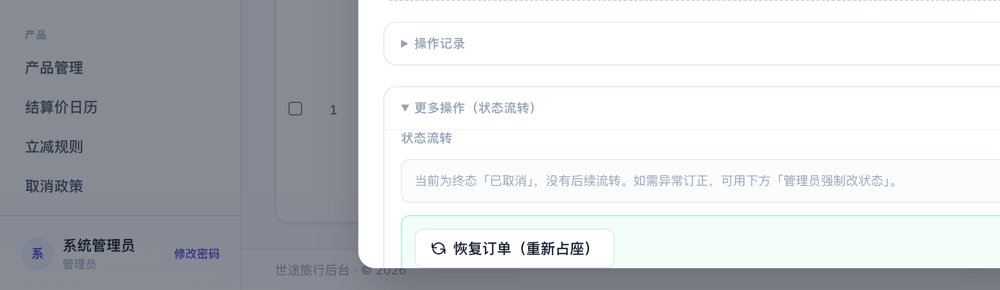
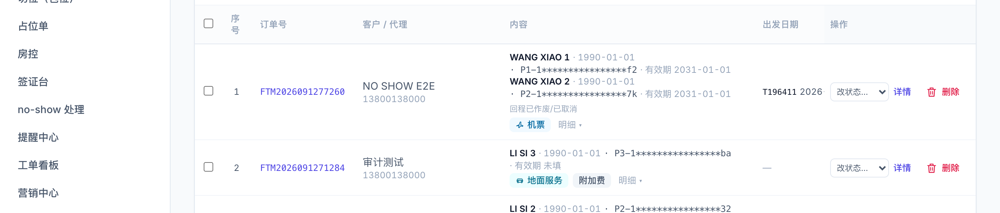
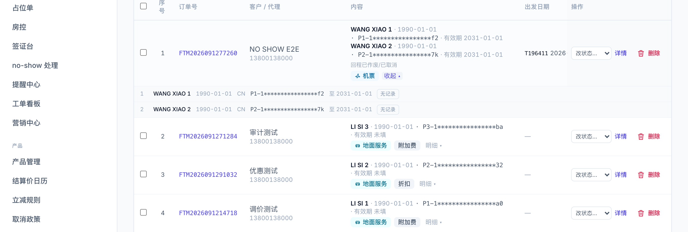
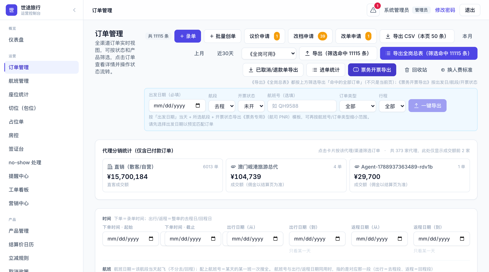

婴儿不占座 · 已取消单可恢复 · 内容列改护照信息 · 可用次数 · 票务导出剔取消单 · 导出签证文案 · 套餐批量按人结算价 · 2026-09-11
解决了什么：婴儿单独录一张单（或和大人同单）以前也会扣掉一个机位，座位统计跟着多算。现在系统按出生日期自动认出婴儿（出发日不满 2 周岁），机票行只按成人 + 儿童扣座，婴儿不占座。金额、乘客人数、出票额度都不变。
解决了什么：以前订单取消了只能重新录一张。现在订单详情里可以直接"恢复"，系统按原航段、原酒店重新扣座扣房；库存不够会拒绝，不会偷偷超卖。

已取消单详情 → 更多操作 → 「恢复订单（重新占座）」
| 情况 | 结果 |
|---|---|
| 已取消 / 支付超时，没付过或没付清 | 恢复为待支付，机位房量重新占上 |
| 已取消，原本付清且钱还在单上 | 恢复为已支付，履约任务重建 |
| 已退款（钱已退回去） | 不能恢复，请重新录单 |
| 有进行中的退款申请 | 先让财务批准或驳回退款，再恢复 |
| 任一航段已经起飞 | 不能恢复 |
| 机位不够 | 二次确认后可按超售放行；超过上限拒绝 |
| 酒店房量不够 | 拒绝，提示缺几间 |
解决了什么：内容列以前显示航班和套餐文字，后面本来就有航班号和日期列，重复了。现在内容列每位乘客一行：姓名（中文名）· 性别 · 生日 · 证件号 · 有效期，婴儿 / 儿童带小标，护照临期（不足 180 天）琥珀色提示。

内容列：每人一行护照信息；超过 3 人折叠成「还有 N 位」，点开看全
解决了什么：以前要导出才能看次数。现在列表里点开乘客明细，每个人后面直接显示「已飞 N · 在订未飞 M · 可用 K」；订单详情的乘客卡片也把"在订未飞"摆成明文。

展开乘客明细：每人一组次数徽章（演示数据都是 0，显示「无记录」）
解决了什么：票务开票导出默认本来就不含已取消单，但在列表里勾选了行（包括已取消的）再导出，勾中的取消单会一起进开票表。现在票务模板不管勾没勾选，一律剔除已取消 / 退款类订单，导出后会提示「已跳过 N 张已取消/退款单」。票务开票导出面板里的预览计数也同口径。

票务开票导出面板：预览与导出都不含已取消 / 退款单
解决了什么：《全岗可用》和全岗总表的签证状态列以前分「不需要 / 已签证 / 自备签」三种，运营说这三种对你们是一回事。现在都显示为「不需要签证」。签证金额、签证公司、备注列不变（自备签金额仍是 0），签证台页面不受影响。
解决了什么：9 月 10 日机票批量创单已经能按人填结算价，套餐批量创单也补上了。名单每行的「结算价/人」填的是这个人整单的价（含单房差、升舱、指定酒店加价），留空的人按结算价日历走。和 OTA 结算单价、批量优惠仍然二选一。
世途旅行 · 运营控制台 | 反馈表总和（9/11）七项变化操作说明 | 2026-09-11 | 文中金额与单号为演示数据